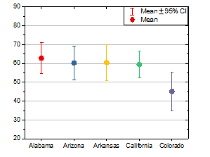
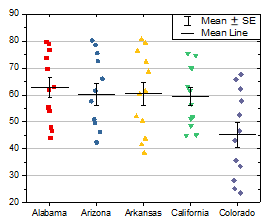

|
|
|
|  |  |
Wählen Sie eine oder mehrere Y-Spalten oder einen Datenbereich aus mindestens einer Y-Spalte aus.
Intervalldiagramm
Punkt-Intervalldiagramm
Intervalldiagramm: BoxInterval.otp
Punkt-Intervalldiagramm: ScatterInterval.otp
Beide Vorlagen sind im Origin-Programmordner installiert.
Tatsächlich ist das Intervalldiagramm ein Boxdiagramm, dessen Boxtyp auf Box und Boxstil auf Keine Box gesetzt ist, während der Perzentiltyp nur das Kontrollkästchen Mittelwert aktiviert und das Symbol des gefüllten Kreises festgelegt ist.
Um ein gruppiertes Intervalldiagramm zu erstellen, können Sie ein zuerst ein gruppiertes Boxdiagramm mit Indexdaten oder Rohdaten erstellen und dann Box_Interval Plot in der Auswahlliste Diagrammdesigns auswählen.
Das Punkt-Intervaldiagramm kann aus einem Intervalldiagramm mit den folgenden Schritten erstellt werden: